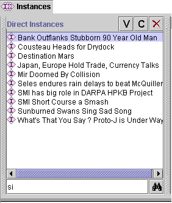

To find an instance in the Direct Instances pane:
If there is only one match, the selection in the the Direct Instances pane will move to the instance which contains the entered text. If there is more than one match, a dialog will be displayed asking you to choose the instance you want.
Comparison is case-insensitive and position-independent. In the following list, si would find Mir Doomed by Collision and Sunburned Swans Sing Sad Song.

If you are unable to find the instance you are looking for, it may be in a different class. You can use the lookup bar at the bottom of the Class Pane at the Instances Tab to look for classes.